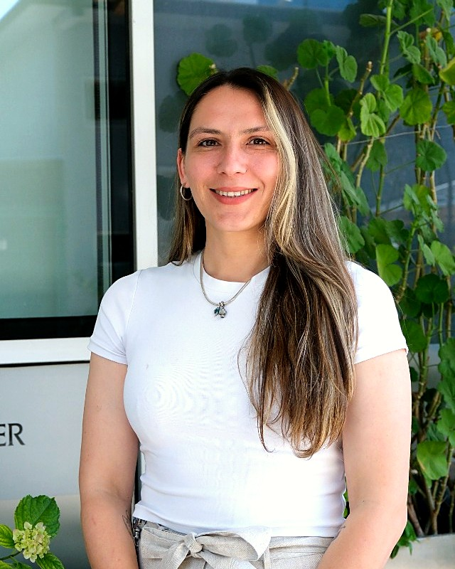

Melis Dilara Arslanhan Gül, Ph.D.
She received her B.Sc. in Molecular Biology and Genetics from İzmir Institute of Technology and her M.Sc. in Oncology from Université Paris-Saclay (ENS Cachan), France. She completed her Ph.D. at Koç University, investigating the molecular mechanisms governing centrosome organization and primary cilium biogenesis.
During her postdoctoral research at Koç University, she studied centriole architecture and ciliary regulation across cellular contexts, including multiciliogenesis, adipocyte differentiation, and cancer. Her work combines advanced microscopy, molecular cell biology, and proximity proteomics.
At the ODyS Lab, she is building an independent research program exploring organelle dynamics in differentiation and disease, with a particular interest in adipocyte biology, metabolic signaling, and cellular responses to disrupted centrosome and cilium organization.